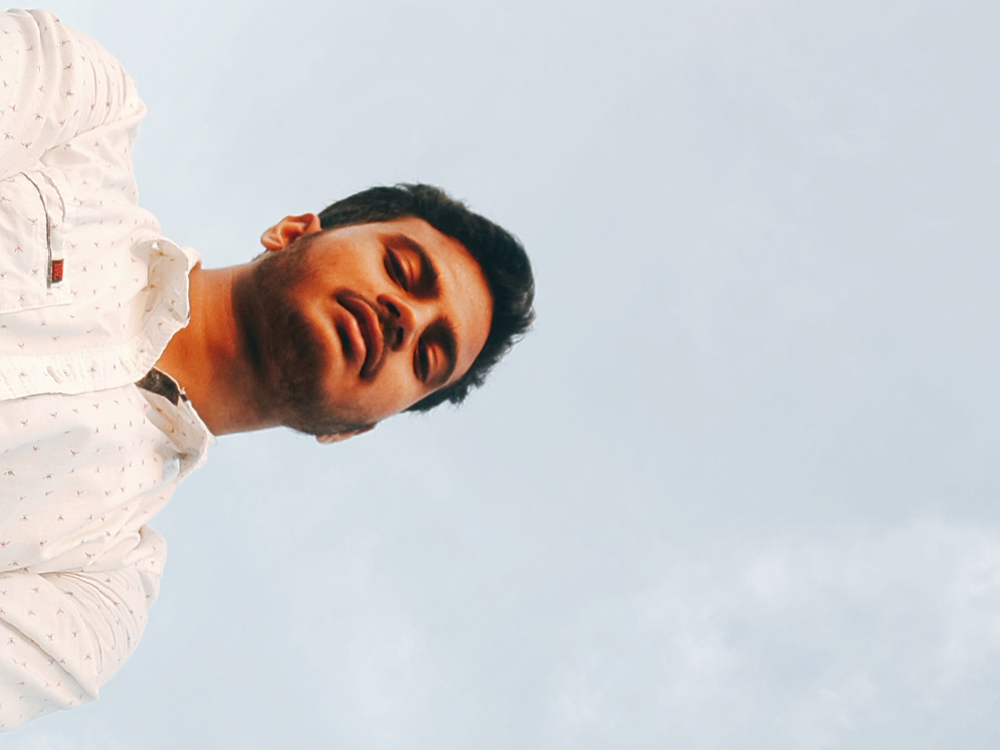
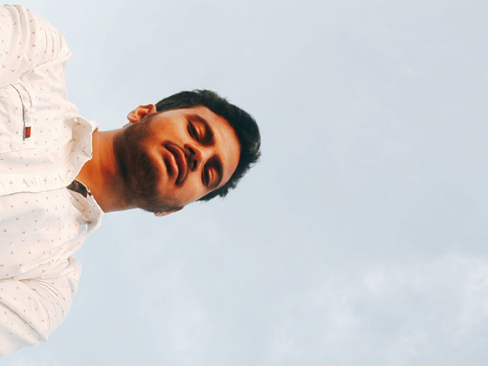

About me
To be honest I am also searching for its answer. I always wonder here and there to find it, God knows when I will find it. Currently an Engineeriing student of LDCE Ahmedabad Also can consider me as an artist, more precisely a musical artist. I use my lyricism as a tool for storytelling. Though I am also learning story writing and music production, it is a lifelong process. I am an electrical engineer by profession and I just love it. By birth I am an inventor, actually de-inventer during my childhood I used to damage electrical appliance to check what is inside . In a nutshell I just want to learn everything, I know that it is not possible in one life but I want.
YourQuote